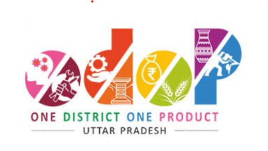
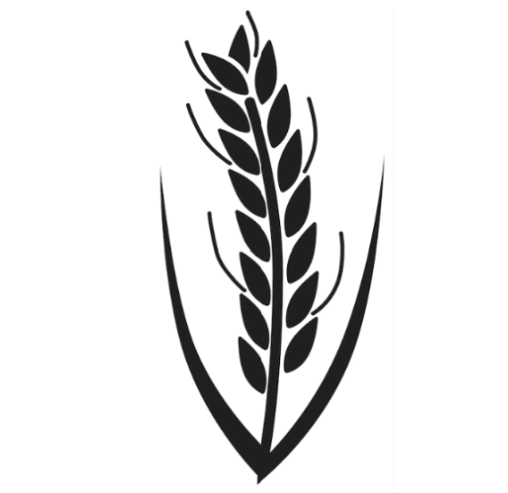

Story behind KalaNamak rice
Kalanamak rice has been cultivated since the Buddhist period (600 BC).Kalanamak grains were
found from excavation of Kapilvastu . During excavation of Aligarhwa carbonized rice grains
resembling Kalanamak were recovered.
Chinese monk Faxian wrote that when Buddha visited Kapilvastu for the first time after
attaining ‘enlightenment’, he was stopped at Mathla village by the people. The villagers
asked Siddhartha to give them prasad. Siddhartha took the rice he had taken in alms and gave
it to the people, asking them to sow it in a marshy place. The rice thus produced “will have
typical aroma which will always remind people of me,” he said.
SPECIAL FEATURES OF RICE
- GI TAG: Kalanamak rice was granted the Geographical Indication (GI) Tag in 2012 by the Government of India for Siddhartnagar district amongst other areas in eastern terai belt of Uttar Pradesh.
-  ODOP: It has been awarded under 'One District One Product' (ODOP) scheme as an ODOP product of Siddharthnagar.
-  SPEACIALITY RICE OF WORLD: Featured in the book "Speciality Rices of the World" by Food and Agricultural Organisation (FAO) of the United Nations.
- NUTRI CROP: The government of India came out with its Nutri-Farm scheme in 2013, with the aim to promote food crops that offer critical micronutrients to improve nutrition status of the vulnerable section of society. Kalanamak rice was one of the nutri-crop selected for this scheme.